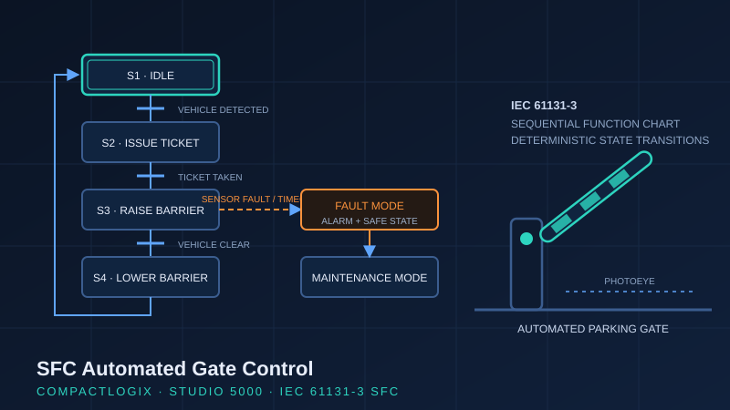

Project Case Study · Winter 2026
Sequential Function Chart — Automated Gate Control System
A multi-state gate control sequence programmed as an IEC 61131-3 Sequential Function Chart on Allen-Bradley CompactLogix — with deterministic fault handling, safe-state transitions, and a dedicated maintenance mode.

Why SFC?
Sequential processes — batching, machine cycles, material handling, gate and door systems — are awkward to express in pure ladder logic, where state is scattered across latches and interlock rungs. IEC 61131-3 Sequential Function Charts make the state machine explicit: steps, transitions, and actions are visible on one chart, which makes the program easier to commission, troubleshoot, and hand over. Knowing when to reach for SFC instead of ladder is itself a controls skill.
The control sequence
- Idle — system armed, awaiting vehicle detection.
- Ticket issuance — vehicle present triggers ticket dispensing; sequence holds until the ticket is taken.
- Barrier actuation — gate raises, vehicle passage is confirmed by sensor, gate lowers safely.
- Alarm activation — abnormal conditions annunciated to the operator.
- Maintenance / fault mode — a distinct mode with system status indication for servicing the gate safely.
Deterministic fault handling
The interesting engineering is in the abnormal paths. The sequence was designed so that a sensor fault or transition timeout always drives the system to a defined safe state — never an ambiguous one. Fault transitions branch out of normal operation into an alarm and safe-state step, and the system requires deliberate operator action to return to service. Timeouts on each step ensure the sequence can never hang silently waiting on a failed sensor.
Design decisions
- Every step has an explicit exit path — either a normal transition or a supervised timeout.
- Safe-state logic de-energizes the barrier drive on any fault, following fail-safe convention.
- Maintenance mode is mutually exclusive with automatic operation, with clear status indication so the system state is never ambiguous to an operator or technician.
What this demonstrates
State-machine thinking and safety-conscious sequence design on real PLC hardware — the discipline of asking "what happens when the sensor fails?" at every step, which is exactly what separates production-ready logic from classroom logic.